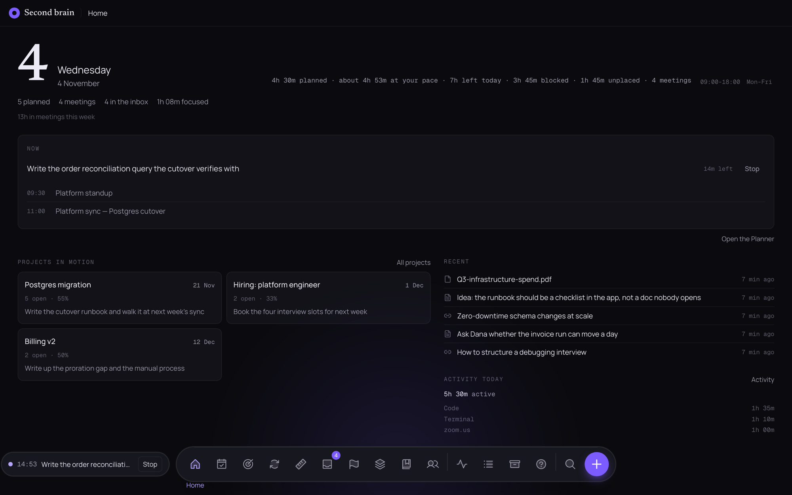
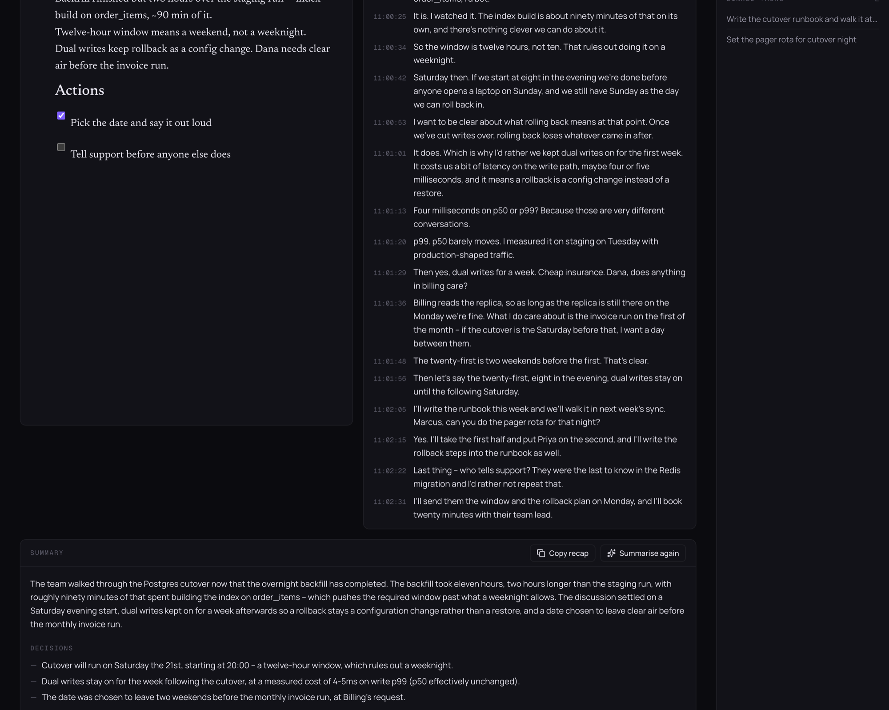
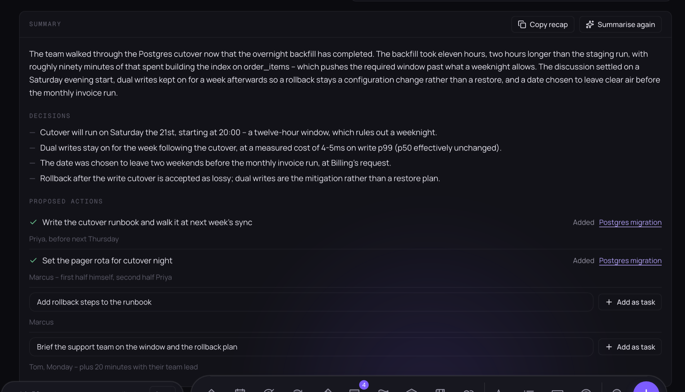
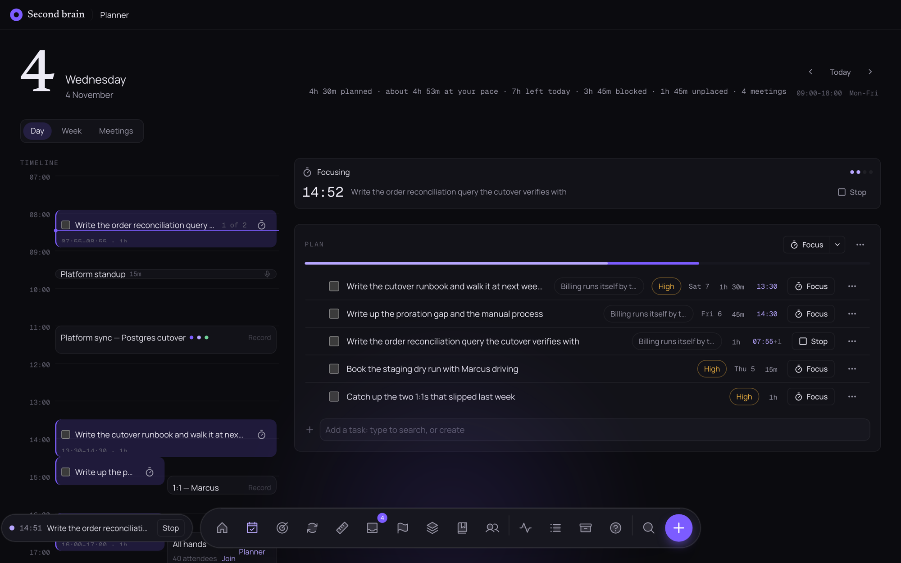
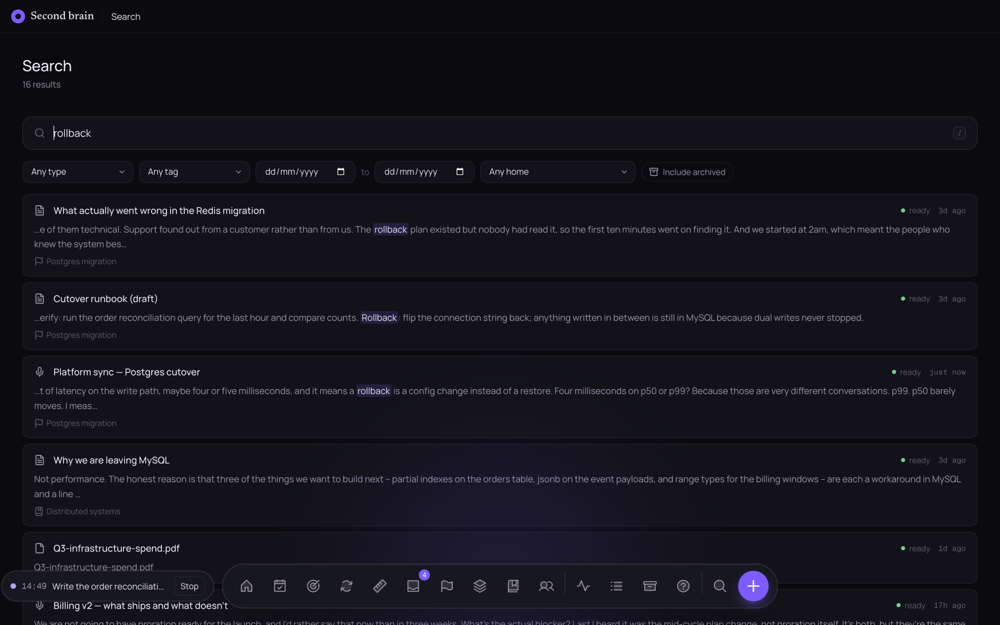
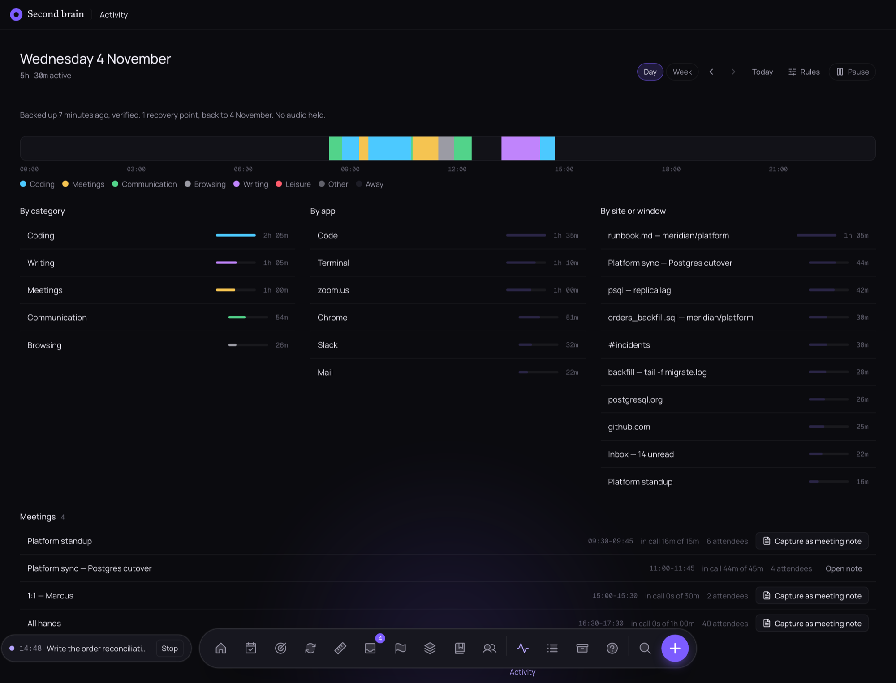

Your meetings, notes and days, kept on one Mac.
Second Brain records a meeting, transcribes it, and writes down what was decided and who is holding what — then puts the plan for tomorrow next to the hours you actually have. Every model runs on your machine. Nothing is uploaded, because there is nowhere for it to go.
Apple Silicon · macOS 12 or newer · 6 GB of local models on first launch
- 11:00:07It finished. Eleven hours for the whole of orders, which is two hours slower than the staging run, but it finished clean.
- 11:00:16Two hours slower on the same hardware? That's the index build on order_items, I'd bet.
- 11:00:34So the window is twelve hours, not ten. That rules out doing it on a weeknight.
- 11:00:42Saturday then. If we start at eight in the evening we're done before anyone opens a laptop on Sunday.
- 11:01:01I'd rather we kept dual writes on for the first week. It means a rollback is a config change instead of a restore.
- 11:01:13Four milliseconds on p50 or p99? Because those are very different conversations.
- 11:01:20p99. p50 barely moves. I measured it on staging on Tuesday with production-shaped traffic.
- 11:02:05I'll write the runbook this week. Marcus, can you do the pager rota for that night?
The team walked through the Postgres cutover now that the overnight backfill has completed. It took eleven hours, two longer than the staging run, with roughly ninety minutes spent building the index on order_items — which pushes the window past what a weeknight allows.
Decisions- Cutover runs Saturday the 21st at 20:00 — a twelve-hour window.
- Dual writes stay on for a week, at 4–5 ms on write p99.
- Date chosen to leave clear air before the monthly invoice run.

A meeting that writes itself down.
It starts recording when a real call starts — a Zoom, Teams, Meet or Webex link on the invite, never an agenda doc that happens to be a URL. The live transcript appears while people are still talking. When the call ends, a 7B model on your Mac reads the whole thing and writes a paragraph, the decisions, and the work somebody left holding.
Every line says the time of day it was said, so the transcript can be read back against your own memory of the room. Each proposed action has an Add as task next to it: accept it and the task is born in the project the meeting belongs to, remembering where it came from.


Planned against the day you actually have.
Drag a task onto the timeline, or let Fill the day drop your open work into whatever is still free. The line at the top counts real minutes: what meetings have already taken, what is blocked, what is still unplaced.
It also counts something a calendar cannot. Every finished task that was estimated and timed teaches it how your estimates run, so a plan of four and a half hours is quietly labelled about 4h 53m at your pace — the median of your last thirty, not a number you typed.

Find it by what you meant.
Keyword and meaning at once: SQLite full-text over every word, and a local embedding model over every chunk, so a search for rollback finds the note that says it and the meeting where somebody worried about it. Transcripts, PDFs, images that went through OCR and your own notes are all the same kind of thing here.

Where the day actually went.
A small helper notes which window is in front and for how long, sorts it into categories by rules you can edit, and nothing leaves the machine. At the end of the day you get the honest version of it: two hours of coding, an hour in calls, and the twenty-six minutes of browsing you would not have guessed.
It also knows which of those minutes were inside a meeting, which is how a recurring call gets costed properly.

Everything else the week needs.
Capture and file
A note, a link or a dropped file lands in the Inbox unfiled. Processing it means one decision: a Project with an end, an Area you maintain, or a Resource you are keeping. Nothing is ever deleted by filing it.
Goals that cannot lie
Link the projects that serve a goal and its progress is computed from the work that is actually done. There is no field to type a percentage into, which is the point.
The weekly review
Four steps: clear the inbox, look back at what finished, check the goals, look ahead. What carried over and what you dropped are both recorded, and the answers are searchable afterwards.
Calls before the answer
Write down the estimate, the risk or the guess, with a date it resolves. The log scores you later: how often the truth landed inside your range, and how often you were simply right.
Distill
Once a note has gone quiet, a small local model boils it down to a gist and a few quotes pulled verbatim from what you wrote — never invented, never paraphrased. Keep it or bin it; the original is untouched.
Meeting audit
What a recurring series has really cost over ninety days: occurrences, hours, attendance and what came out of it. Plain facts, with no score and no ranking.
There is no server. That is the whole design.
Transcription is whisper.cpp on your Mac. Summaries are Qwen2.5-7B on your Mac. Search embeddings are computed on your Mac. The database is one SQLite file in your own Library folder, and the app works with the Wi-Fi switched off.
The models are downloaded once on first launch, from Hugging Face, and never again. After that the only network
traffic the app makes is fetching a link you pasted and reading a calendar feed you configured. Your data directory is
yours: ~/Library/Application Support/second-brain, backed up nightly, exportable by copying a folder.
Two commands and a long download.
Homebrew brings the four things the app needs at runtime — node, llama.cpp,
whisper-cpp and ffmpeg — which is why it is the recommended way in. Install the dmg by hand
and you are responsible for those yourself.
brew tap heapworks-in/tap
brew trust heapworks-in/tap
brew install --cask second-brain
First launch unpacks the server, downloads about 6 GB of models with a progress bar, builds the two Swift helpers, and
opens on localhost:3141. It lives in the menu bar after that. The
documentation covers permissions, every surface in the app, and what to do when a transcript or
a summary does not appear.